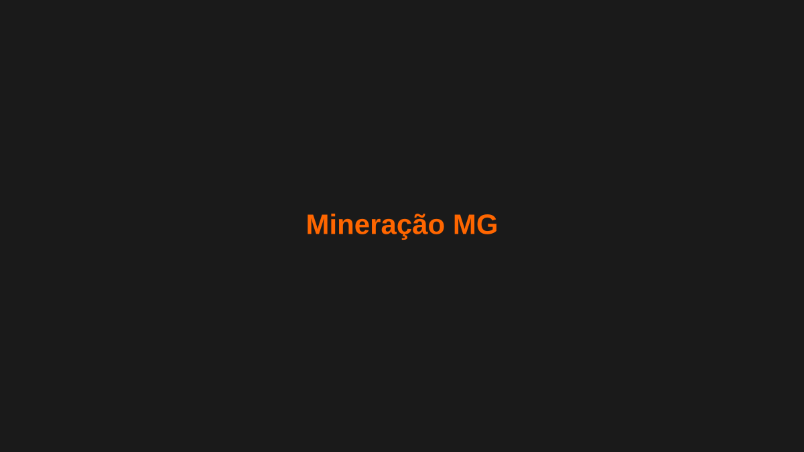

Mineradora em Ouro Preto: pátio de estocagem de minério de ferro sem autuações
Como uma mineradora do Quadrilátero Ferrífero eliminou as não conformidades ambientais e reduziu em 95% a emissão de particulado no seu maior pátio de estocagem com 4 canhões de névoa SP-65.
Estudo de caso completo

O desafio
Uma mineradora de ferro do Quadrilátero Ferrífero, em Ouro Preto (MG), vinha recebendo notificações do órgão ambiental estadual por excesso de material particulado em suspensão no seu principal pátio de estocagem de minério. A movimentação constante de caminhões fora-de-estrada, pás carregadeiras e empilhadeiras de pilhas gerava nuvens de poeira que ultrapassavam os limites da licença de operação, colocando em risco a continuidade das atividades.
O sistema de aspersão por canhões portáteis então utilizado exigia deslocamento manual constante entre pontos do pátio, não acompanhava a direção do vento e deixava grandes áreas sem cobertura nos horários de pico de movimentação.
A solução Suppress
Após o diagnóstico técnico gratuito, a equipe de engenharia da Suppress identificou os quatro pontos críticos de geração de poeira no pátio — pontos de descarga, bases das pilhas e vias de tráfego de equipamentos pesados — e dimensionou uma solução com 4 canhões de névoa SP-65 fixos, com alcance de 65 metros cada, posicionados em torres de sustentação para cobertura ampla e uniforme.
- Cobertura simultânea das quatro áreas críticas do pátio, sem necessidade de deslocamento.
- Névoa de gotículas finas dimensionada para captura eficiente de PM10.
- Operação programada por turnos, alinhada aos horários de maior movimentação de equipamentos.
- Baixo consumo de água em relação aos sistemas de aspersão por mangueira anteriores.
"Em poucas semanas após a instalação dos canhões, o resultado já era visível — literalmente. A poeira que cobria os equipamentos e o pátio praticamente desapareceu."
Implementação
A instalação foi realizada em etapas, sem interromper a operação do pátio. Cada canhão foi montado sobre uma estrutura metálica elevada, com alimentação hídrica conectada à rede de reuso de água da mineradora, reduzindo o impacto no consumo de água potável.
A equipe operacional local recebeu treinamento para operação e manutenção básica dos equipamentos, com suporte remoto da Suppress para ajustes finos de posicionamento e programação dos ciclos de operação.
Resultados
No primeiro relatório de monitoramento de qualidade do ar após a instalação, a mineradora registrou redução de 95% na emissão de material particulado nas áreas cobertas pelos canhões SP-65. Desde então, a unidade não recebeu novas notificações por excesso de poeira, regularizando sua situação junto ao órgão ambiental.
Sua mineradora também pode operar sem autuações por poeira
Solicite um diagnóstico gratuito e descubra qual configuração de canhões de névoa é ideal para o seu pátio de estocagem.
Solicitar Diagnóstico Gratuito